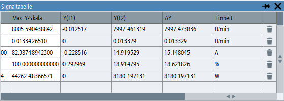

Wenn einer der ersten beiden Messcursor oder beide im Trace-Diagramm eingeschaltet sind, werden in der Signaltabelle zusätzliche Spalten angezeigt. Diese Spalten enthalten die Werte der Signale an den derzeitigen Positionen der beiden Cursor und die Differenz der Signalwerte.
Die Spalten mit den Cursordaten werden automatisch ausgeblendet, wenn die Cursor deaktiviert werden.
Wenn für ein Signal an der aktuellen Position des Cursors kein Messwert vorliegt, wird der Wert des vorherigen Messpunkts angezeigt. Dies kann z. B. der Fall sein, wenn Signale mit unterschiedlichen Abtastraten gemessen wurden.